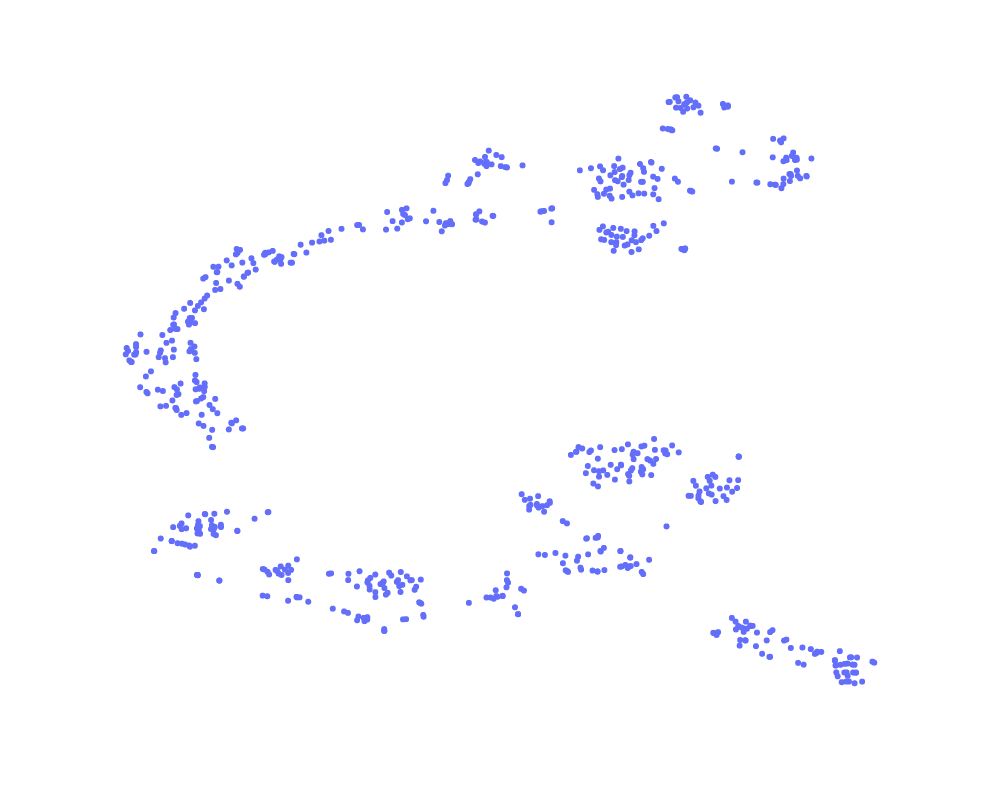
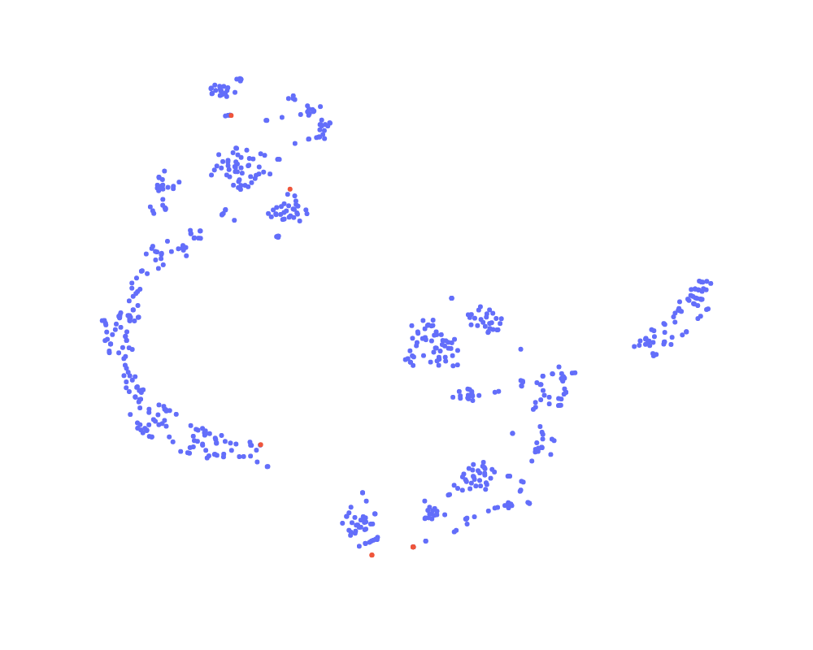

A cada grano de café se realizó la toma de dos fotos, una por el frente y otra por el reverso, sobre una hoja clara, la cual cuenta con tres cuadros de referencia de color que miden 1 por lado.
EL COMITE NACIONAL DE CAFETEROS mediante la RESOLUCION NUMERO 5 DE 2002, dicta las medidas conducentes a garantizar la calidad del café de Exportación, las cuales deberán ser observadas, tanto por la Federación Nacional de Cafeteros de Colombia como por los exportadores privados.
Desarrollar un prototipo capaz de clasificar los granos del café.
Reducir el porcentaje de error de error de clasificación para evitar realizar una compensación o la devolución del cargamento.
Se realizara un clasificador de defectos de Café Verde. Los defectos tenidos en cuenta y las caracteristicas son:
Se Ajustaron 3 modelos, una Red Neuronal Convolucional, un Bosque Aleatorio y una Regresión Logística. Se calificaron con las métricas de f1_score, accuracy, precision_score, recall_score y matriz de confusión, dándole más relevancia a esta última.
Inicialmente se tiene que el modelo CNN tiene problemas ya que las redes neuronales son demandantes en imagenes por lo cual este modelo presenta sobreajuste, la Regresión Logística es un modelo no es demandante en muestras. Al comparar las metricas númericas la Regresión Logística presenta mejores metricas sobre todos los modelos tambien presenta la mejor matriz de confusion, por ultimo el tiempo de ajuste de modelos el modelo CNN tarda aproximadamente 15 minutos en ser entrenado, la Regresión Logística tarda solo tarda 1 segundo.
Realizar un nuevo diseño de experimento.
Aumentar las muestras, ya que estos modelos pueden ser potencializados con mayores y mejores imagenes.
Se elige la Regresión Logística por presentar mejores tiempos y metricas.